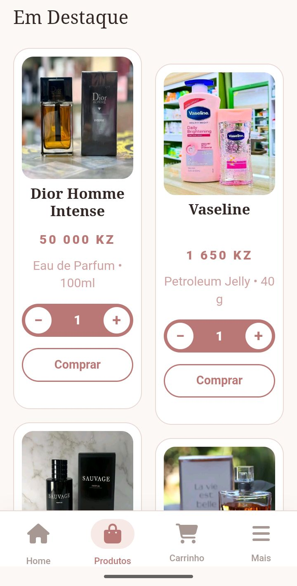
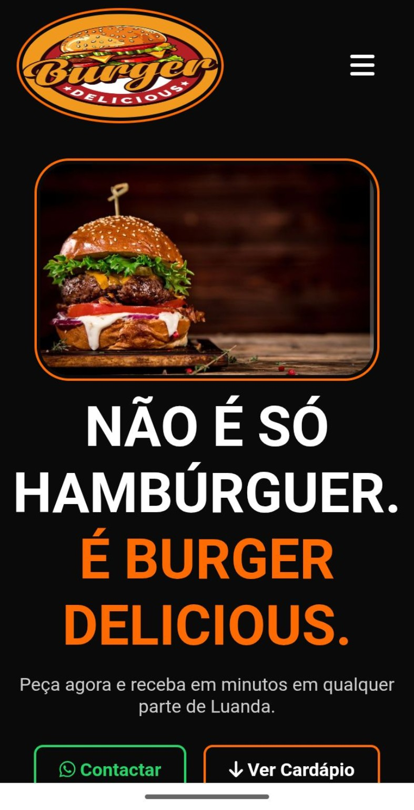
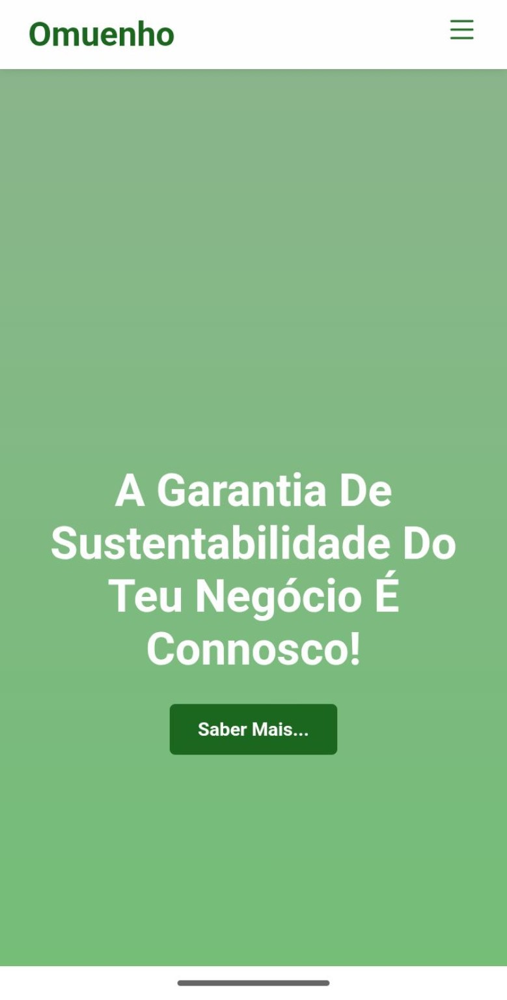
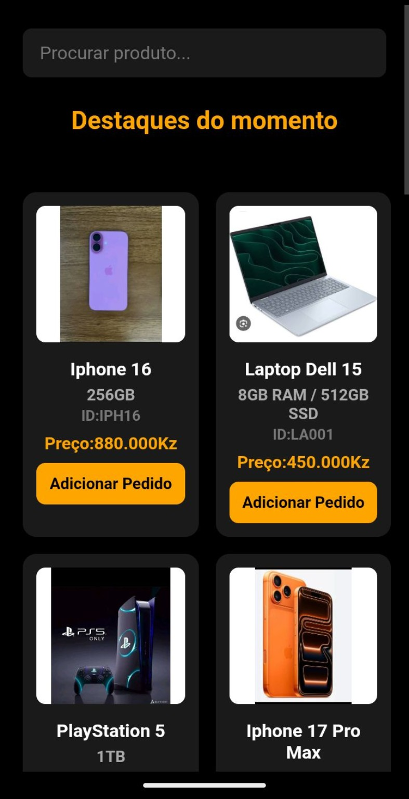
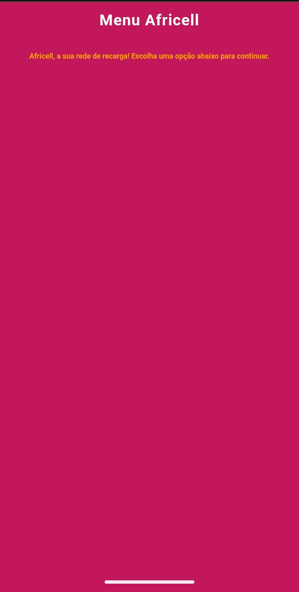

Ver projetoKadima Beauty
Loja online completa com catálogo, filtros por categorias, carrinho de compras e painel de administração. Desenvolvido com HTML, CSS, JavaScript, Node.js, Express e PostgreSQL.
Visitar projetoOlá, sou o Pedro
Desenvolvedor Web | Redes | Cibersegurança
Transformo ideias em soluções digitais. Desenvolvo páginas web, lojas online e catálogos que ajudam pessoas e negócios a apresentar melhor o que fazem e a chegar aos seus clientes.
A tecnologia faz sentido quando torna alguma coisa mais simples, mais acessível ou mais útil.
Sou Pedro José Miguel, desenvolvedor web em evolução contínua, com percurso iniciado em 2025. Gosto de compreender as necessidades, transformar requisitos em funcionalidades e construir experiências digitais claras, funcionais e adaptadas a quem as utiliza.
O meu foco profissional atual está na criação de soluções web para negócios: páginas de apresentação, catálogos digitais e lojas online completas com backend e base de dados. Paralelamente, estou a aprofundar conhecimentos em redes de computadores através do percurso CCNA e a construir bases em cibersegurança.
Quero crescer como profissional de tecnologia, compreendendo não só as aplicações, mas também as redes, os sistemas e a segurança que ajudam a mantê-las a funcionar.
Vamos conversar sobre uma ideiaFerramentas que fazem parte do meu processo de aprendizagem e construção.
REDES DE COMPUTADORES
Conhecimentos que estou a consolidar para compreender, configurar e diagnosticar redes.
Fundamentos de redes e comunicação
Modelos OSI e TCP/IP
Dispositivos de rede e meios físicos
Ethernet, switches e encaminhamento básico
Endereçamento IPv4 e IPv6
Sub-redes e planeamento de endereços
Configuração inicial de routers e switches
Comandos Cisco IOS e verificação
Protocolos, ARP, ICMP e resolução de problemas
Segurança básica e boas práticas de rede
Conteúdos apresentados como áreas de estudo do percurso CCNA 1; a organização e a profundidade variam conforme a versão do curso.
Uma seleção de trabalhos que mostra diferentes ideias, contextos e soluções.

Ver projetoLoja online completa com catálogo, filtros por categorias, carrinho de compras e painel de administração. Desenvolvido com HTML, CSS, JavaScript, Node.js, Express e PostgreSQL.
Visitar projeto
Ver projetoLanding page de uma hamburgueria, pensada para apresentar a marca e orientar os visitantes para o menu e contacto.
Visitar projeto
Ver projetoPresença digital para um projeto ligado à agricultura, com foco na identidade e apresentação da atividade.
Visitar projeto
Ver projetoExperiência de comércio eletrónico com organização de produtos e uma navegação orientada à descoberta.
Visitar projeto
Ver projetoProjeto usado para explorar a arquitetura da interface, a hierarquia do conteúdo e a navegação.
Visitar projetoSe visitaste um projeto, deixa uma opinião ou uma sugestão. O teu feedback ajuda-me a melhorar.
Se precisas de uma página web, catálogo digital ou loja online, conta-me a tua ideia. Vamos perceber juntos qual é a solução mais adequada.